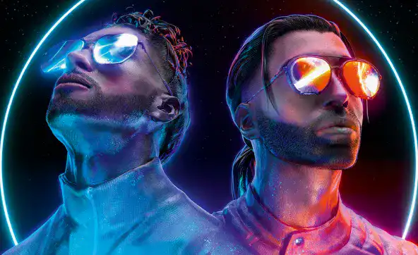
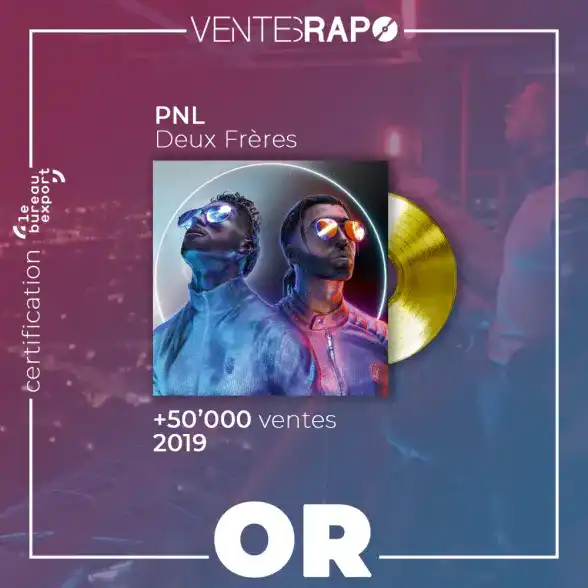
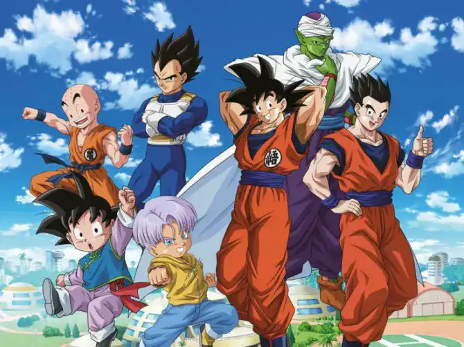

Accueil
Uranus - PNL
Deux frères :
La musique ‘Uranus’ de PNL est une musique faisant parti de l’album « Dans la légende » sorti en 2016. PNL, étant un groupe de musique composé de deux rappeurs français , Ademo et N.O.S , deux frères. Ils ont composé, écrit , produit , plusieurs de leurs sons et on ainsi crée plusieurs labels notamment PNL records, QLF records en 2014 et 2015.
Quelques chiffres et données :
En 2016 ils sortent leur album Dans la légende qui est considéré comme du « cloud rap » , qui fait un succès monumental. Plusieurs sons comme Naha, Béné, Dans la légende, Onizuka deviennent des sons très rapidement cultes et encré dans l’histoire du rap français. L’album est vendu à plus d’1 million d’exemplaires. L’album a reçu des accueils critiques positifs, reçoit également le disque d’or avec 51 487 exemplaires vendus en 1 semaine et bien plus tard en décembre reçoit le triple disque de platine l’équivalent de 300.000 ventes.
Contenus musicals :
PNL utilise des sonorités musicales très mélodieuses qui peux faire réfléchir l’auditeur et le faire voyager en mélangeant avec des sonorités « douces » et « spatiales » qui font voyager l’esprit et permet de faire le vide. Dans leurs textes ils font beaucoup de références, de plusieurs mangas notamment GTO , Dragon Ball et Naruto. Cela nous permet de se situer dans un contexte et d’être pensif, de voyager leurs musiques entre le monde animé des mangas et le monde réel.
